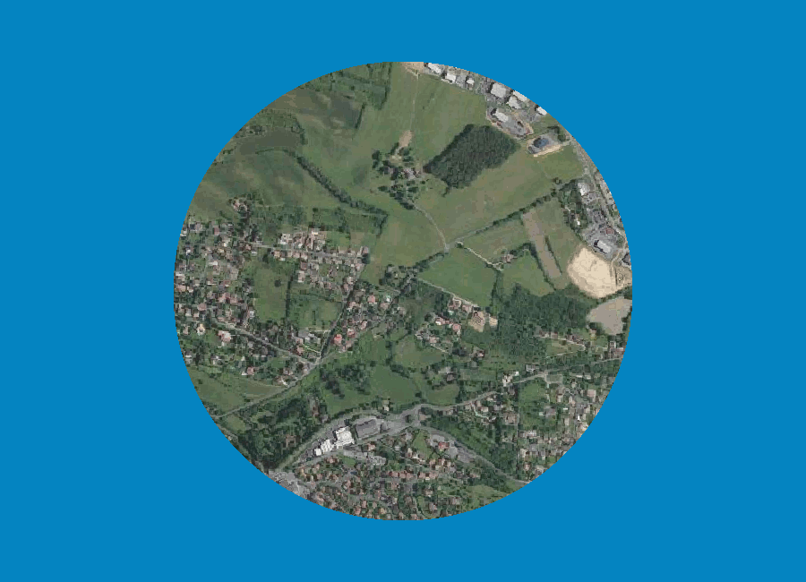

PhD student.
PhD subject: "Updating land cover data: a multi-source and multi-modal approach for change qualification and land use characterization by machine learning".
Member of STRUDEL team.
Doctorant.
Sujet de thèse: "Mise à jour de données d'occupation du sol: une approche multi-source et multi-modale pour la qualification de changement et la caractérisation d'usages du sol par apprentissage automatique".
Membre de l'équipe STRUDEL.
Organisation of the LASTIG newcomer seminar
Received the "Best Presentation Award" for the work entitled "Comparison of two data fusion approaches for land use classification », Martin Cubaud, Arnaud Le Bris, Laurence Jolivet, Ana-Maria Olteanu-Raimond" in "ISSDQ" Workshop at ISPRS Geospatial Week 2023.
Updating land cover data: a multi-source and multi-modal approach for change qualification and land use characterization by deep learning
Mise à jour de données d'occupation du sol: une approche multi-source et multi-modale pour la qualification de changement et la caractérisation d'usages du sol par apprentissage automatique
Detection of micro and macroplastics using hyperspectral images
Détection des micro et macroplastiques à partir d'imagerie hyperspectrale
Evaluation of the above ground carbon in the vegetation, using multiple microwave satellite observations
Evaluation du stock de carbone aérien dans la végétation à partir de multiples observations satellite micro-ondes